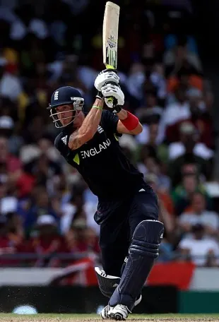

Kevin Pietersen
Role: Right-Handed Batsman
Bio: Kevin Pietersen is one of England's most explosive batsmen, known for his aggressive batting style and ability to play match-winning innings. He played a pivotal role in England's success during the 2000s and early 2010s, including their Ashes victories.
Career Stats
| Format | Matches | Innings | Not Outs | Runs | High Score | Average | Strike Rate | 100s | 50s | Wickets | Best Bowling |
|---|---|---|---|---|---|---|---|---|---|---|---|
| Test | 104 | 168 | 10 | 8181 | 227 | 47.28 | 60.73 | 23 | 35 | 2 | 1/20 |
| ODI | 136 | 130 | 8 | 4114 | 130 | 40.73 | 86.97 | 10 | 25 | 0 | N/A |
| T20I | 37 | 36 | 4 | 1176 | 78* | 37.20 | 130.71 | 1 | 8 | 0 | N/A |
Memorable Moments
Pietersen's remarkable innings in the 2005 Ashes series, where he played a crucial role in England's victory.
His explosive innings in the 2011 Cricket World Cup, including a pivotal performance against India.